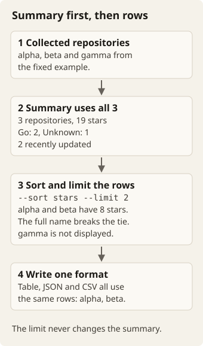

Cloud Resource Reporter
Build a Go CLI that lists the GitHub repositories of an organisation. The CLI calculates summary statistics and writes table, JSON, or CSV reports.
Glossary
This brief uses each term below with one meaning only.
- Organisation: the GitHub organisation whose repositories the command lists.
--orgtakes its name. - Repository: one item in the array that the API returns. The command keeps only some of its fields.
- Full name: the organisation name and the repository name together, for example
example-org/alpha. - Page: one API response. Each request asks for 100 repositories per page.
- Link header: the response header that contains the pagination URLs.
- Next link: the URL marked
rel="next"in the Link header. If it is absent, there are no more pages. - Rate limit: the number of requests that GitHub accepts in a time window. Responses report the remaining count and the reset time in headers.
- Token: an optional GitHub credential. The core command does not need a token.
- Summary: the statistics for all collected repositories: counts, stars, languages, and recent updates.
- Displayed rows: the repositories that the report displays after sort and limit.
- Report: the complete output of one run, in one output format.
- Output format:
table,json, orcsv.--formatselects it.
The command
cloudreport repos --org kubernetes
cloudreport repos --org hashicorp --sort stars --limit 20
cloudreport repos --org prometheus --format json
cloudreport repos --org grafana --format csv > repos.csvUse the Go standard library. Start with a sequential HTTP client. Test it against a local server. The live command reads public GitHub data. It needs internet access, but no account or token. Do not put live requests in your test suite.
| Flag | Meaning |
|---|---|
--org | Required. One organisation name, not a URL or an owner/repository pair. |
--format | Default: table. table, json, or csv. |
--sort | Default: stars. stars, forks, and updated sort in descending order. name sorts in ascending order. Break ties by full repository name, in ascending order. |
--limit | Default: 20. The maximum number of displayed rows. Zero displays all rows. Negative values are errors. Always fetch all pages before you apply the limit. |
--timeout | Default: 30. A positive integer number of seconds for each HTTP request. This time includes reading the response body. |
Use these exit statuses:
- 0: the command wrote a complete report.
- 2: the arguments are invalid.
- 1: a fetch, cancellation, or output error occurred.
Write reports to stdout. Write diagnostics to stderr. A failed fetch must leave stdout empty, even when earlier pages succeeded.
Start a workspace
Create or attach a folder from the Workspace panel. If you start in an external terminal, run these commands:
mkdir cloudreport
cd cloudreport
go mod init example.com/cloudreportThese parts are enough to start:
- a main function
- an HTTP client
- a function that calculates the report
- a writer
Choose names and file boundaries as the program grows. The stages below include test cases. You write those tests yourself.
AI mentor prompt
I am on the overview and setup stage. Ask me to explain each flag and each exit status. Ask me why a failed fetch leaves stdout empty. Give one hint at a time. Do not edit files. Do not show the solution unless I ask for it.
Fetch one page
Make one GET request. Decode the response into typed Go values. Use this endpoint and these request headers:
GET https://api.github.com/orgs/{org}/repos?type=public&sort=full_name&direction=asc&per_page=100&page=1
Accept: application/vnd.github+json
User-Agent: cloudreport
X-GitHub-Api-Version: 2026-03-10Accept only an organisation name in --org. Reject these values:
- a blank value
- a value that contains whitespace
- a value that contains
/,\,?,#,:, or@
Build the request with net/url. Make the API base URL injectable in Go, so that tests can use httptest.NewServer.
Keep the repository ID, name, full name, stars, forks, language, description, and update time. GitHub calls the count fields stargazers_count and forks_count. Language and description can be null. Use *string if you need to keep that distinction. The report displays a missing language as Unknown. It displays a missing description as an empty string.
Decode updated_at into time.Time. A malformed timestamp or JSON body is a fetch error. Ignore unknown JSON fields. Close every response body, including the bodies of error responses. Check the HTTP status before you decode the repository array.
First test
- Write a local handler that checks the request path, query parameters, and headers.
- Make the handler return one repository.
- Assert the decoded name, count, and timestamp of that repository.
- Add a case with an empty array.
- Add a case with a repository that has a null language and a null description.
Hint: separate fetching from printing
A method such as FetchPage(ctx context.Context, pageURL string) ([]Repo, string, error) can return repositories and the next-page URL. Let its caller do the formatting. Accept an *http.Client, so that tests can choose a transport.
Reference: List organisation repositories. API version checked against GitHub's version documentation on 23 September 2026.
AI mentor prompt
I am on the stage "Fetch one page". Ask me which --org values my code rejects, and why. Ask me why I check the HTTP status before I decode the array. Ask me how my types keep a null language different from an empty string. Give one hint at a time. Do not edit files. Do not show the solution unless I ask for it.
Fetch the remaining pages
Follow the URL marked rel="next" in the Link header of the response. Stop when it is absent. The number of returned rows does not tell you whether another page exists.
Link: <https://api.github.com/orgs/example-org/repos?page=2&per_page=100>; rel="next", <https://api.github.com/orgs/example-org/repos?page=4&per_page=100>; rel="last"
- Request page 1.
- Check the HTTP status. Decode the repository array. Keep the first copy of each repository ID.
- Read the Link header. Find the URL marked
rel="next". The number of rows does not decide. - If a next link exists, check it. Then go back to step 1 and request it.
- If there is no next link, the client has every page. Calculate the report.
- Write the report in one output format to stdout. Then exit 0. If the write fails, exit 1.
- If any page fails, stop. Write the error to stderr. Leave stdout empty. Exit 1.
Apply these pagination rules:
- Fetch pages in order.
- Keep the query parameters of the next URL.
- Resolve relative links against the current page.
- Allow only the configured API origin and the same organisation-repositories path.
- Reject a repeated next URL.
- Apply the same origin restriction to redirects, so that an optional token cannot go to another origin.
Deduplicate repositories by ID. Keep the first observation of each ID. GitHub data can change between requests. Pagination does not give a transactionally consistent snapshot. Sorting by full name reduces movement caused by star or update changes. But repositories can still be added, deleted, or renamed during the run.
Tests to write
- Two pages: the first has a next link and the second has none. Assert that the client fetched both pages.
- A short first page still has a next link. A full final page has none.
- The header contains
prev,last, andnextin a different order. - An ID appears on both pages. The report contains it once, with its first values.
- A next link repeats a visited URL or points at another origin. Return an error without requesting it.
- Page two returns 500 or invalid JSON. Return an error and no partial report.
Hint: make the loop's state visible
Track the next URL, the visited URLs, and the IDs that you already collected. Fetch and check one page before you update those collections. Keep this loop separate from sorting and output limits.
Reference: GitHub pagination.
AI mentor prompt
I am on the stage "Fetch the remaining pages". Ask me why the row count cannot tell me that another page exists. Ask me which next links my client rejects, and why. Ask me what my loop tracks between pages. Give one hint at a time. Do not edit files. Do not show the solution unless I ask for it.
Calculate the report
Calculate these summary values:
- the total repository count
- the total stars
- the repositories per language
- the count of repositories updated within the last seven days
Use all collected repositories for the summary. Then sort and limit the displayed rows.
Read the current time once per run. Pass it into the calculation. Count timestamps from now - 7 × 24 hours through now, inclusive. Exclude future timestamps. Use ordinary string ordering for names and language labels. Use the full name to break numeric or timestamp ties.
A fixed example
The following is a constructed dataset. In tests, set now to 2026-09-23T12:00:00Z.
[
{"id":1,"name":"alpha","full_name":"example-org/alpha","stargazers_count":8,"forks_count":2,"language":"Go","description":"API, workers","updated_at":"2026-09-22T12:00:00Z"},
{"id":2,"name":"beta","full_name":"example-org/beta","stargazers_count":8,"forks_count":4,"language":null,"description":null,"updated_at":"2026-09-01T12:00:00Z"},
{"id":3,"name":"gamma","full_name":"example-org/gamma","stargazers_count":3,"forks_count":1,"language":"Go","description":"Queue tools","updated_at":"2026-09-20T12:00:00Z"}
]With --sort stars --limit 2, display alpha then beta. The summary is still 3 repositories, 19 stars, Go: 2, Unknown: 1, and 2 recently updated.

- The fixed example has 3 repositories: alpha, beta, and gamma.
- The summary uses all 3: 3 repositories, 19 stars, Go: 2, Unknown: 1, and 2 recently updated.
--sort stars --limit 2selects the displayed rows. alpha and beta both have 8 stars. The full name breaks the tie. gamma is not displayed.- All output formats use the same displayed rows: alpha, then beta.
Tests to write
Write test cases for these inputs:
- every sort mode
- ties
- a zero limit
- a limit larger than the dataset
- empty input
- timestamps exactly at the seven-day boundary and just outside it
- a future timestamp
Check that a change to the display limit never changes the summary totals.
Hint: test this without HTTP
Pass a slice of repositories and a fixed time directly into the report function. If callers need the original order of the slice, copy it before you sort it. Use sort.Slice or slices.SortFunc. Put the tie-break rule in the same comparator.
AI mentor prompt
I am on the stage "Calculate the report". Ask me to calculate the summary of the fixed example by hand. Ask me why the display limit must not change the summary. Ask me how my code treats a timestamp exactly at the seven-day boundary. Give one hint at a time. Do not edit files. Do not show the solution unless I ask for it.
Write table, JSON, and CSV output
All formats use the same displayed rows. Only the presentation changes. The examples below use the fixed dataset and --sort stars --limit 2.
Table
Repository report: example-org
Repositories: 3 (showing 2)
NAME STARS FORKS LANGUAGE UPDATED
alpha 8 2 Go 2026-09-22
beta 8 4 Unknown 2026-09-01
Total stars: 19
Languages: Go (2), Unknown (1)
Updated in last 7 days: 2Use UTC dates. Align the columns. You choose the spacing. Sort language labels alphabetically. text/tabwriter aligns columns, so you do not have to calculate column widths by hand. Check its flush error.
JSON
{
"org": "example-org",
"summary": {
"total_repos": 3,
"total_stars": 19,
"languages": {"Go": 2, "Unknown": 1},
"updated_last_7_days": 2
},
"repos": [
{"name":"alpha","full_name":"example-org/alpha","stars":8,"forks":2,"language":"Go","description":"API, workers","updated_at":"2026-09-22T12:00:00Z"},
{"name":"beta","full_name":"example-org/beta","stars":8,"forks":4,"language":"Unknown","description":"","updated_at":"2026-09-01T12:00:00Z"}
]
}Use these field names and types. Write an empty array if there are no repositories. Write an empty object if there are no languages. Pretty-print the result. The order of object keys is not important. Keep timestamps in UTC RFC3339 format.
CSV
name,full_name,stars,forks,language,updated_at,description
alpha,example-org/alpha,8,2,Go,2026-09-22T12:00:00Z,"API, workers"
beta,example-org/beta,8,4,Unknown,2026-09-01T12:00:00Z,The CSV output contains only a header and repository rows. Use encoding/csv to handle commas, quotes, and newlines in descriptions. Flush the writer. Then check Error(). For an empty organisation, write only the header.
Tests to write
- Decode the JSON output before you compare values.
- Parse the CSV output back into records.
- Check the row order and the totals in the table.
- Add descriptions that contain commas, double quotes, and newlines.
- Supply an
io.Writerthat returns an error. Check that the formatting code reports the error.
A writer can fail after it writes some bytes. Report that failure on stderr. Exit 1. A successful fetch does not make a command with a failed write successful.
AI mentor prompt
I am on the stage "Write table, JSON, and CSV output". Ask me how my CSV output handles commas, quotes, and newlines in a description. Ask me what my command does when the writer fails after some bytes. Give one hint at a time. Do not edit files. Do not show the solution unless I ask for it.
Handle failures and cancellation
A one-shot report can stop and explain an API failure. The core command does not automatically retry or wait for a rate-limit window.
| Response or failure | Command behaviour |
|---|---|
| 401 | Report an authentication error. |
| 404 | Report that the organisation was not found or is inaccessible. |
| 403 or 429 with rate-limit details | Report the limit and any retry time that GitHub supplies. Stop fetching. |
| Other non-200 response | Report the status and a bounded excerpt of its message. A 403 without rate-limit evidence may be an access error. |
| Invalid JSON, interrupted body, timeout, or connection failure | Identify the failed page. Return the error. |
| Ctrl+C | Cancel the active request. Stop fetching more pages. |
Unauthenticated requests normally share an IP-based budget of 60 requests per hour. Read X-RateLimit-Remaining and X-RateLimit-Reset from responses. The reset value is a Unix timestamp. Retry-After supplies a delay in seconds. Secondary limits can occur with a nonzero remaining count. Missing or invalid headers should not crash the client.
- If a successful response reports fewer than ten remaining requests, write a warning to stderr.
- If the count is zero and the command needs another page, stop with an error.
- If there are no more pages, the report is complete and the command can print it.
Use signal.NotifyContext at the command boundary. Pass its context through every page request. Release its resources when the command returns. Limit error-body reads, for example to 4 KiB, so that an HTML error page does not flood the terminal.
Tests to write
Use local responses for each row in the table. Assert that rate-limit errors never cause another request. Assert that no warning appears on stdout.
For cancellation, do these steps:
- Make the handler signal that it received the request.
- Make the handler wait for its request context to end.
- Cancel the parent context of the client.
Use a timeout only to fail a hung test. Do not use it to guess when the handler started.
References: GitHub rate limits and API request guidance.
AI mentor prompt
I am on the stage "Handle failures and cancellation". Ask me what my command does for each row in the failure table. Ask me why a rate-limit error never causes another request. Ask me how my cancellation test knows that the handler received the request. Give one hint at a time. Do not edit files. Do not show the solution unless I ask for it.
Run and review the command
go test ./...
go build -o cloudreport .
./cloudreport repos --org kubernetes --format table --limit 5
./cloudreport repos --org kubernetes --format json --limit 5 > report.json
./cloudreport repos --org kubernetes --format csv --limit 5 > repos.csvOn Windows, build cloudreport.exe. Make the live calls after the local tests pass. Repository counts and timestamps will differ from the constructed example. Check the process exit status and the files. In the app, attach this folder. Use Your tests to run your suite.
Review questions
Why fetch every page when the limit is five?
The display sort may differ from the API order. The summary covers the whole organisation. If the command stops after five records, it could miss the highest-starred repository. It would also undercount the totals.
Why use a fixed time in tests?
A repository can cross the seven-day boundary between test runs. If you pass a time into the calculation, you can test that boundary. The test then does not depend on the clock of the machine.
Would concurrent page requests help?
Each next URL arrives with the preceding page. More requests can encounter secondary limits. Start with sequential requests. For multiple organisations, a bounded worker pool may help. Keep pagination sequential within each organisation. Sort the merged results before you print them.
Optional extensions
- Authentication: Read
GITHUB_TOKENfrom the environment. Send it as a bearer token only to the configured API origin. Keep the public-repositories filter. Exclude the token from errors and reports. - Caching: Save response bodies with their ETags. Send conditional requests. For a 304 response, read the cached body. Cache each page with its pagination information.
- Diff reports: Add repository IDs to the saved report format. Then compare reports by ID. Display added, removed, and renamed repositories, and changed counts.
- Multiple organisations: Add bounded concurrency, cancellation, and tests with controlled handlers. Run
go test -race ./...with a host Go toolchain and C compiler. - History: Save dated reports. Plot star changes from those observations. The repository endpoint gives the current count. It does not give a star-history series.
AI mentor prompt
I am on the stage "Run and review the command". Ask me the review questions one at a time. Ask me to explain the exit status of one live run. Give one hint at a time. Do not edit files. Do not show the solution unless I ask for it.